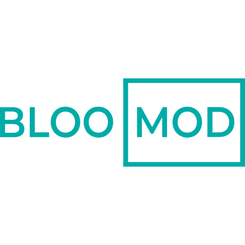

Hi! I'm Roy.
This is my
UX portfolio.
I love designing
user experiences
_

DATE
March 2017 - February 2021
ROLE
Cofounder & CXO
GOALS
Creating a product ecosystem, aimed at purifying air quality in indoor environments with plants and IoT.
DATE
January 2020 - December 2020
ROLE
Concept, Research & Visuals
GOALS
Creating a platform that allows volunteers and organizations give better help to those suffering of unwanted solitude, specially the elder.